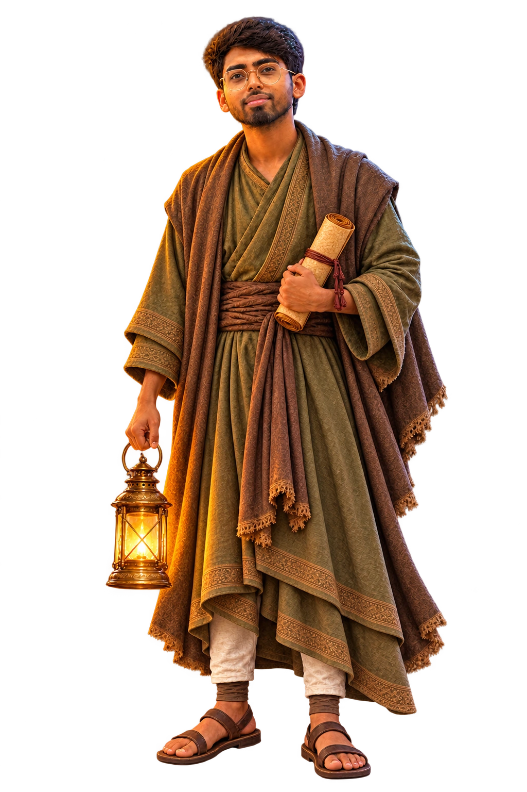

Anmol Patel Builder and keeper
A builder with roots in Nalanda.
I’m a software engineering student from Nalanda, Bihar. I build practical products where technology meets people and real-world problems.
Engineering is an act of preservation: understand what failed, change what matters, and protect what still works.
- Roots
- Nalanda, Bihar
- Focus
- Full-stack + AI
- Method
- Build · Test · Preserve

Four layers, one practice
What I carry forward.
The place shaped the metaphor. The work gives it proof.
-
Roots
Nalanda made knowledge feel less like information and more like something people are responsible for carrying forward.
-
Learning
I study the whole path from interface to backend, data and cloud so an idea can survive contact with real users.
-
Building
I turn friction into products: understand the problem, test the intervention and keep evidence of what changed.
-
Preserving
Every project record keeps the failure, decision and surviving lesson visible—not only the polished outcome.
The next record is about the tools behind the work.
Continue to skills